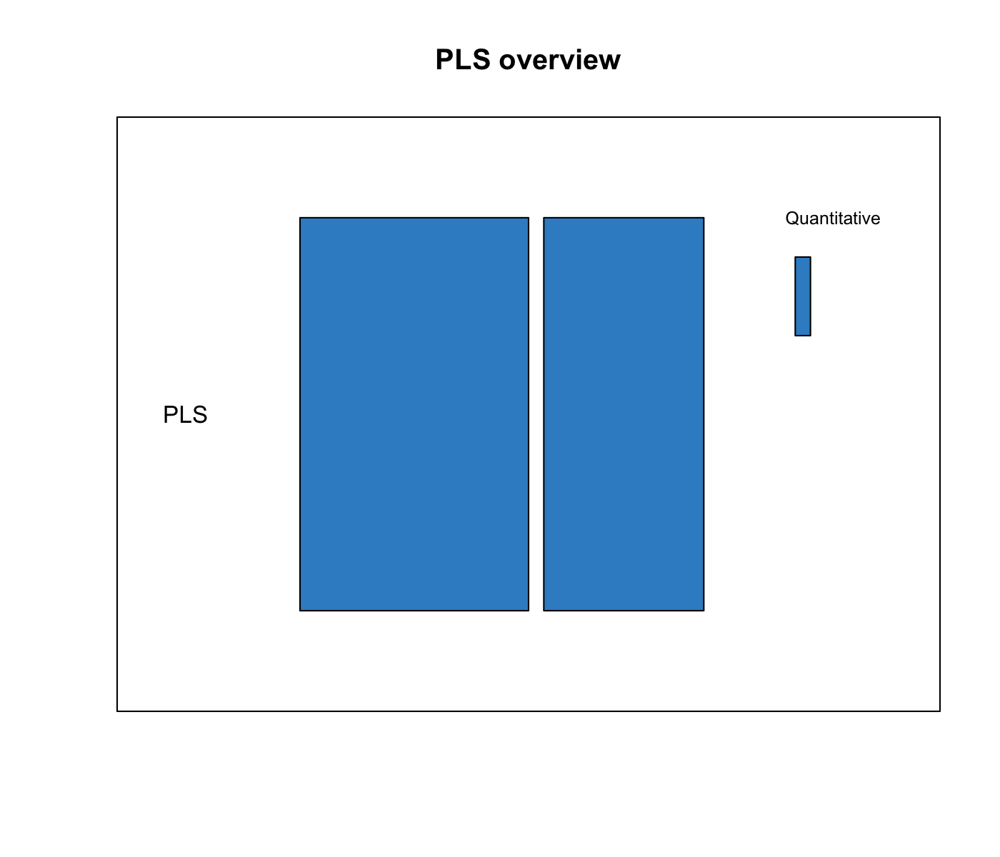

Chapter 5 Projection to Latent Structure (PLS)

5.1 Biological question
I would like to integrate two data sets measured on the same samples by extracting correlated information, or by highlighing commonalities between data sets.
5.2 The nutrimouse study
The nutrimouse study contains the expression levels of genes potentially involved in nutritional problems and the concentrations of hepatic fatty acids for forty mice. The data sets come from a nutrigenomic study in the mouse from our collaborator (Martin et al. 2007), in which the effects of five regimens with contrasted fatty acid compositions on liver lipids and hepatic gene expression in mice were considered. Two sets of variables were measured on 40 mice:
gene: the expression levels of 120 genes measured in liver cells, selected among (among about 30,000) as potentially relevant in the context of the nutrition study. These expressions come from a nylon microarray with radioactive labelling.lipid: concentration (in percentage) of 21 hepatic fatty acids measured by gas chromatography.diet: a 5-level factor. Oils used for experimental diets preparation were corn and colza oils (50/50) for a reference diet (REF), hydrogenated coconut oil for a saturated fatty acid diet (COC), sunflower oil for an Omega6 fatty acid-rich diet (SUN), linseed oil for an Omega3-rich diet (LIN) and corn/colza/enriched fish oils for the FISH diet (43/43/14).genotype2-levels factor indicating either wild-type (WT) and PPAR\(\alpha\) -/- (PPAR).
More details can be found in ?nutrimouse.
To illustrate sparse PLS, we will integrate the gene expression levels (gene) with the concentrations of hepatic fatty acids (lipid).
5.3 Principle of PLS
Partial Least Squares (PLS) regression (Wold 1966; Wold, Sjöström, and Eriksson 2001) is a multivariate methodology which relates () two data matrices X (e.g. transcriptomics) and Y (e.g. lipids). PLS goes beyond traditional multiple regression by modelling the structure of both matrices. Unlike traditional multiple regression models, it is not limited to uncorrelated variables. One of the many advantages of PLS is that it can handle many noisy, collinear (correlated) and missing variables and can also simultaneously model several response variables in Y.
PLS is a multivariate projection-based method that can address different types of integration problems. Its flexibility is the reason why it is the backbone of most methods in mixOmics. PLS is computationally very efficient when the number of variables \(p + q >> n\) the number of samples. It performs successive local regressions that avoid computational issues due to the inversion of large singular covariance matrices. Unlike PCA which maximizes the variance of components from a single data set, PLS maximizes the covariance between components from two data sets. The mathematical concepts of covariance and correlation are similar, but the covariance is an unbounded measure and covariance has a unit measure (see 1.2.1). In PLS, linear combination of variables are called latent variables or latent components. The weight vectors used to calculate the linear combinations are called the loading vectors. Latent variables and loading vectors are thus associated, and come in pairs from each of the two data sets being integrated.
5.4 Principle of sparse PLS
Even though PLS is highly efficient in a high dimensional context, the interpretability of PLS needed to be improved. sPLS has been recently developed by our team to perform simultaneous variable selection in both data sets X and Y data sets, by including LASSO \(\ell_1\) penalizations in PLS on each pair of loading vectors (Lê Cao et al. 2008).
5.5 Inputs and outputs
We consider the data input matrices: X is a \(n \times p\) data matrix and Y a \(n \times q\) data matrix, where \(n\) the number of samples (individuals), \(p\) and \(q\) are the number of variables in each data set. PLS main outputs are:
A set of components, also called latent variables associated to each data set. There are as many components as the chosen dimension of the PLS.
A set of loading vectors, which are coefficients assigned to each variable to define each component. Those coefficients indicate the importance of each variable in PLS. Importantly, each loading vector is associated to a particular component. Loading vectors are obtained so that the covariance between a linear combination of the variables from
X(the X-component) and fromY(the \(Y\)-component) is maximised.A list of selected variables from both
XandYand associated to each component if sPLS is applied.
5.6 Set up the data
We first set up the data as X expression matrix and Y as the lipid abundance matrix. We also check that the dimensions are correct and match:
library(mixOmics)
data(nutrimouse)
X <- nutrimouse$gene
Y <- nutrimouse$lipid
dim(X); dim(Y)## [1] 40 120## [1] 40 215.7 Quick start
We will mainly focus on sparse PLS for large biological data sets where variable selection can help the interpretation of the results. See ?pls for a model with no variable selection. Here we arbitrarily set the number of variables to select to 50 on each of the 2 components of PLS (see section 5.8.5 for tuning these values).
MyResult.spls <- spls(X,Y, keepX = c(25, 25), keepY = c(5,5)) # 1 Run the method
plotIndiv(MyResult.spls) # 2 Plot the samplesplotVar(MyResult.spls) # 3 Plot the variablesIf you were to run spls with this minimal code, you would be using the following default values:
ncomp = 2: the first two PLS components are calculated and are used for graphical outputs;scale = TRUE: data are scaled (variance = 1, strongly advised here);mode = "regression": by default a PLS regression mode should be used (see 5.8.6 for more details) .
Because PLS generates a pair of components, each associated to each data set, the function plotIndiv produces 2 plots that represent the same samples projected in either the space spanned by the X-components, or the Y-components. A single plot can also be displayed, see section 5.8.1.
5.8 To go further
5.8.1 Customize sample plots
Some of the sample plot additional arguments were described in 4.7.1. In addition, you can choose the representation space to be either the components from the X-data set, the Y- data set, or an average between both components rep.space = 'XY-variate'. See more examples in examples(plotIndiv) and on our website. Here are two examples with colours indicating genotype or diet:
plotIndiv(MyResult.spls, group = nutrimouse$genotype,
rep.space = "XY-variate", legend = TRUE,
legend.title = 'Genotype',
ind.names = nutrimouse$diet,
title = 'Nutrimouse: sPLS')
plotIndiv(MyResult.spls, group=nutrimouse$diet,
pch = nutrimouse$genotype,
rep.space = "XY-variate", legend = TRUE,
legend.title = 'Diet', legend.title.pch = 'Genotype',
ind.names = FALSE,
title = 'Nutrimouse: sPLS')
5.8.2 Customize variable plots
See (example(plotVar)) for more examples. Here we change the size of the labels. By default the colours are assigned to each type of variable. The coordinates of the variables can also be saved as follows:
plotVar(MyResult.spls, cex=c(3,2), legend = TRUE)
coordinates <- plotVar(MyResult.spls, plot = FALSE)5.8.3 Other useful plots for data integration
We extended other types of plots, based on clustered image maps and relevance networks to ease the interpretation of the relationships between two types of variables. A similarity matrix is calculated from the outputs of PLS and represented with those graphics, see (González et al. 2012) for more details, and our website
5.8.3.1 Clustered Image Maps
A clustered image map can be produced using the cim function. You may experience figures margin issues in RStudio. Best is to either use X11() or save the plot as an external file. For example to show the correlation structure between the X and Y variables selected on component 1:
X11()
cim(MyResult.spls, comp = 1)
cim(MyResult.spls, comp = 1, save = 'jpeg', name.save = 'PLScim')5.8.3.2 Relevance networks
Using the same similarity matrix input in CIM, we can also represent relevance bipartite networks. Those networks only represent edges between on type of variable from X and the other type of variable, from Y. Whilst we use sPLS to narrow down to a few key correlated variables, our keepX and keepY values might still be very high for this kind of output. A cut-off can be set based on the correlation coefficient between the different types of variables.
Other arguments such as interactive = TRUE enables a scrollbar to change the cut-off value interactively, see other options in ?network. Additionally, the graph object can be saved to be input into Cytoscape for an improved visualisation.
X11()
network(MyResult.spls, comp = 1)
network(MyResult.spls, comp = 1, cutoff = 0.6, save = 'jpeg', name.save = 'PLSnetwork')
# save as graph object for cytoscape
myNetwork <- network(MyResult.spls, comp = 1)$gR5.8.3.3 Arrow plots
Instead of projecting the samples into the combined XY representation space, as shown in 5.8.1, we can overlap the X- and Y- representation plots. One arrow joins the same sample from the X- space to the Y- space. Short arrows indicate a good agreement found by the PLS between both data sets.
plotArrow(MyResult.spls,group=nutrimouse$diet, legend = TRUE,
X.label = 'PLS comp 1', Y.label = 'PLS comp 2')
5.8.4 Variable selection outputs
The selected variables can be extracted using the selectVar function for further analysis.
MySelectedVariables <- selectVar(MyResult.spls, comp = 1)
MySelectedVariables$X$name # Selected genes on component 1## [1] "SR.BI" "SPI1.1" "PMDCI" "CYP3A11" "Ntcp" "GSTpi2" "FAT"
## [8] "apoC3" "UCP2" "CAR1" "Waf1" "ACOTH" "eif2g" "PDK4"
## [15] "CYP4A10" "VDR" "SIAT4c" "RXRg1" "RXRa" "CBS" "SHP1"
## [22] "MCAD" "MS" "CYP4A14" "ALDH3"MySelectedVariables$Y$name # Selected lipids on component 1## [1] "C18.0" "C16.1n.9" "C18.1n.9" "C20.3n.6" "C22.6n.3"The loading plots help visualise the coefficients assigned to each selected variable on each component:
plotLoadings(MyResult.spls, comp = 1, size.name = rel(0.5))
5.8.5 Tuning parameters and numerical outputs
For PLS and sPLS, two types of parameters need to be chosen:
1 - The number of components to retain ncomp, 2 - The number of variables to select on each component and on each data set keepX and keepY for sparse PLS.
For item 1 we use the perf function and repeated k-fold cross-validation to calculate the Q\(^2\) criterion used in the SIMCA-P software (Umetri 1996). The rule of thumbs is that a PLS component should be included in the model if its value is \(\leq 0.0975\). Here we use 3-fold CV repeated 10 times (note that we advise to use at least 50 repeats, and choose the number of folds that are appropriate for the sample size of the data set).
We run a PLS model with a sufficient number of components first, then run perf on the object.
MyResult.pls <- pls(X,Y, ncomp = 4)
set.seed(30) # for reproducbility in this vignette, otherwise increase nrepeat
perf.pls <- perf(MyResult.pls, validation = "Mfold", folds = 5,
progressBar = FALSE, nrepeat = 10)
plot(perf.pls$Q2.total)
abline(h = 0.0975)
This example seems to indicate that up to 3 components could be enough. In a small \(p+q\) setting we generally observe a Q\(^2\) that decreases, but that is not the case here as \(n << p+q\).
Item 2 can be quite difficult to tune. Here is a minimal example where we only tune keepX based on the Mean Absolute Value. Other measures proposed are Mean Square Error, Bias and R2 (see ?tune.spls):
list.keepX <- c(2:10, 15, 20)
# tuning based on MAE
set.seed(30) # for reproducbility in this vignette, otherwise increase nrepeat
tune.spls.MAE <- tune.spls(X, Y, ncomp = 3,
test.keepX = list.keepX,
validation = "Mfold", folds = 5,
nrepeat = 10, progressBar = FALSE,
measure = 'MAE')
plot(tune.spls.MAE, legend.position = 'topright')
Based on the lowest MAE obtained on each component, the optimal number of variables to select in the X data set, including all variables in the Y data set would be:
tune.spls.MAE$choice.keepX## comp1 comp2 comp3
## 15 2 20Tuning keepX and keepY conjointly is still work in progress. What we advise in the meantime is either to adopt an arbitrary approach by setting those parameters arbitrarily, depending on the biological question, or tuning one parameter then the other.
5.8.6 PLS modes
You may have noticed the mode argument in PLS. We can calculate the residual matrices at each PLS iteration differently. Note: this is fore advanced users.
5.8.6.1 Regression mode
The PLS regression mode models a ‘causal’ (or, rather, uni-directional) relationship between two data sets. The Y matrix is deflated with respect to the information extracted/modelled from the local regression on X. Here the goal is to predict Y from X (Y and X play an assymmetric role). Consequently the latent variables computed to predict Y from X are different from those computed to predict X from Y. More details about the model can be found in[ Appendix (Lê Cao et al. 2008).
PLS regression mode, also called PLS2, is commonly applied for the analysis of biological data (Boulesteix and Strimmer 2005; Bylesjö et al. 2007) due to the biological assumptions or the biological dogma. In general, the number of variables in Y to predict are fewer in number than the predictors in X.
5.8.6.2 Canonical mode
Similar to a Canonical Correlation Analysis (CCA) framework, this mode is used to model a {bi-directional (or symmetrical) relationship between the two data sets. The Y matrix is deflated with respect to the information extracted or modelled from the local regression on Y. Here X and Y play a symmetric role and the goal is similar to CCA. More details about the model can be found in (Lê Cao et al. 2009).
PLS canonical mode is not well known (yet), but is applicable when there is no a priori relationship between the two data sets, or in place of CCA but when variable selection is required in large data sets. In (Lê Cao et al. 2009), we compared the measures of the same biological samples on different types of microarrays, cDNA and Affymetrix arrays, to highlight complementary information at the transcripts levels. Note however that for this mode we do not provide any tuning function.
5.8.6.3 Other modes
The ‘invariant’ mode performs a redundancy analysis, where the Y matrix is not deflated. The ‘classic’ mode is similar to a regression mode. It gives identical results for the variates and loadings associated to the X data set, but differences for the loadings vectors associated to the Y data set (different normalisations are used). Classic mode is the PLS2 model as defined by (Tenenhaus 1998), Chap 9.
5.8.6.4 Difference between PLS modes
For the first PLS dimension, all PLS modes will output the same results in terms of latent variables and loading vectors. After the first dimension, these vectors will differ, as the matrices are deflated differently.
5.9 Additional resources
Additional examples are provided in example(spls) and in our case studies on our website in the Methods and Case studies sections, see also (Lê Cao et al. 2008; Lê Cao et al. 2009).
5.10 FAQ
- Can PLS handle missing values?
- Yes it can, but only for the learning / training analysis. Prediction with
perfortuneis not possible with missing values.
- Yes it can, but only for the learning / training analysis. Prediction with
- Can PLS deal with more than 2 data sets?
- sPLS can only deal with 2 data sets, but see
DIABLO(Chapter 6) for multi-block analyses
- sPLS can only deal with 2 data sets, but see
- What are the differences between sPLS and Canonical Correlation Analysis (CCA, see
?rccain mixOmics)?- CCA maximises the correlation between components; PLS maximises the covariance
- Both methods give similar results if the components are scaled, but the underlying algorithms are different:
- CCA calculates all component at once, there is no deflation
- PLS has different deflation mode
- sparse PLS selects variables, CCA cannot perform variable selection
- Can I perform PLS with more variables than observations?
- Yes, and sparse PLS is particularly useful to identify sets of variables that play a role in explaining the relationship between two data sets.
- Can I perform PLS with 2 data sets that are highly unbalanced (thousands of variables in one data set and less than 10 in the other ?
- Yes! Even if you performed sPLS to select variables in one data set (or both), you can still control the number of variables selected with
keepX.
- Yes! Even if you performed sPLS to select variables in one data set (or both), you can still control the number of variables selected with
References
Martin, P.G.P., H. Guillou, F. Lasserre, S. Déjean, A. Lan, J.-M. Pascussi, M. San Cristobal, P. Legrand, P. Besse, and T. Pineau. 2007. “Novel Aspects of PPARalpha-Mediated Regulation of Lipid and Xenobiotic Metabolism Revealed Through a Multrigenomic Study.” Hepatology 54: 767–77.
Wold, Herman. 1966. Estimation of Principal Components and Related Models by Iterative Least Squares. Edited by P. R. Krishnaiah. New York: Academic Press.
Wold, Svante, Michael Sjöström, and Lennart Eriksson. 2001. “PLS-Regression: A Basic Tool of Chemometrics.” Chemometrics and Intelligent Laboratory Systems 58 (2). Elsevier: 109–30.
Lê Cao, KA, D Rossouw, C Robert-Granié, P Besse, and others. 2008. “A Sparse PLS for Variable Selection When Integrating Omics Data.” Statistical Applications in Genetics and Molecular Biology 7: Article–35.
González, Ignacio, Kim-Anh Lê Cao, Melissa J Davis, Sébastien Déjean, and others. 2012. “Visualising Associations Between Paired ’Omics’ Data Sets.” BioData Mining 5 (1). BioMed Central Ltd: 19.
Umetri, AB. 1996. “SIMCA-P for windows, Graphical Software for Multivariate Process Modeling.” Umea, Sweden.
Boulesteix, AL, and K Strimmer. 2005. “Predicting Transcription Factor Activities from Combined Analysis of Microarray and Chip Data: A Partial Least Squares Approach.” Theor Biol Med Model 2 (23).
Bylesjö, Max, Daniel Eriksson, Miyako Kusano, Thomas Moritz, and Johan Trygg. 2007. “Data Integration in Plant Biology: The O2pls Method for Combined Modeling of Transcript and Metabolite Data.” The Plant Journal 52: 1181–91.
Lê Cao, Kim-Anh, Pascal GP Martin, Christèle Robert-Granié, and Philippe Besse. 2009. “Sparse Canonical Methods for Biological Data Integration: Application to a Cross-Platform Study.” BMC Bioinformatics 10 (1). BioMed Central Ltd: 34.
Tenenhaus, Michel. 1998. La Régression PLS: Théorie et Pratique. Editions Technip.